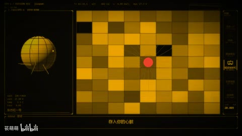

AI06类型专题 · 字重、留白与情绪
字体就是画面
文字不只传递句义；尺寸、密度、位置和停留也能表现权力、迟疑、压迫或爆发。先确定读什么，再设计怎样读。
先问这个问题
这是需要读懂的正文、只需识别的关键词，还是作为材质的字纹？三者有没有混淆？
适合什么内容
片头、宣言、观点短片、情绪段落、纯文字预告、预算有限但有明确文案的作品。
容易失效的地方
全文都用巨字，换字快于阅读，字号随意跳变，装饰字压住真正重要的词。
做一次小练习
选一段自己写的40字文案，制作“克制”和“急迫”两版；不增加文字，用停留、字重和留白改变语气。
用观察表复盘 →